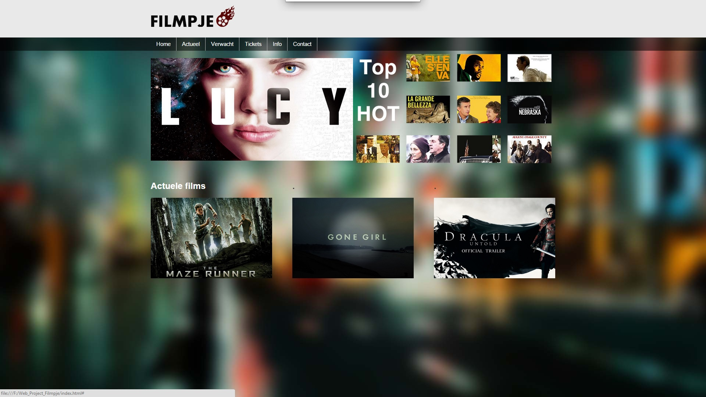
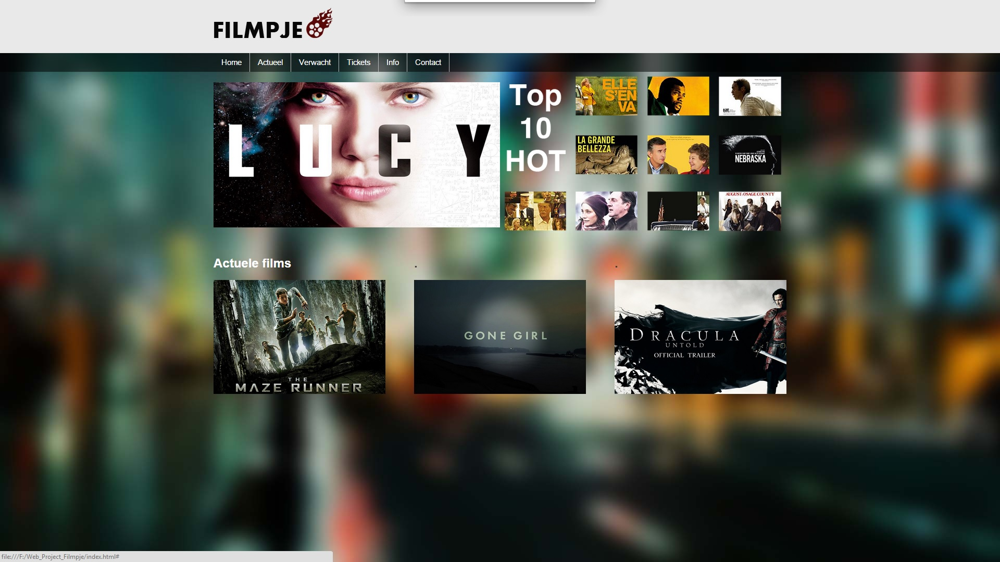
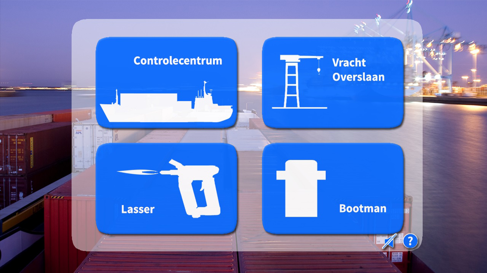

Project 1: Filmpje
 Voor het eerste project hebben ik samen met mijn groep een bioscoopwebsite gemaakt voor de fictieve bioscoop Filmpje. Bij dit project hebben we gebruik gemaakt van: HTML/CSS en Javascript.
 Voor het eerste project hebben ik samen met mijn groep een bioscoopwebsite gemaakt voor de fictieve bioscoop Filmpje. Bij dit project hebben we gebruik gemaakt van: HTML/CSS en Javascript.
 Tijdens periode twee hebben we gewerkt aan minigames. Het doel van de opdracht was om minigames te maken voor de haven van Rotterdam, zodat zij het kunnen gebruiken om jongeren over te halen om in de haven te gaan werken.